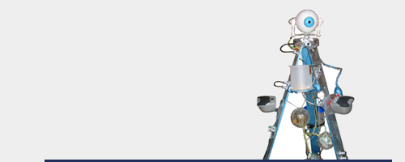

ROBÖXOTICA: Das Festival für Cocktail-Robotik
Bis vor kurzem gab es keine Versuche, die Rolle der Cocktail-Robotik als Index f�r die Integration technologischer Entwicklung in die menschliche Lebenswelt �ffentlich zu thematisieren und der Entstehung neuer, a priori dem Radikalhedonismus verschriebener Ber�hrungspunkte in der Mensch-Maschine-Kommunikation zur Dokumentation zu verhelfen.
Dieses Vakuum versucht die ROB�XOTICA zu füllen. Die weltweit erste und zwangsläufig führende Veranstaltung zum Thema Cocktail-Robotik. Ein mikromechanischer Paradigmenwechsel im Zeitalter des entgrenzten Kapitals. Da wird nicht nur Herrn Turing warm um den Test.
